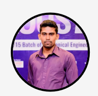

Madushan Rajapaksha
IoT Undergraduate | Mechanical Engineer
Bridging the gap between physical machinery and digital intelligence. Currently based in Kuopio, Finland, specializing in smart automation, embedded systems, and industrial optimization.
Bridging the gap between physical machinery and digital intelligence. Currently based in Kuopio, Finland, specializing in smart automation, embedded systems, and industrial optimization.

Mechanical Engineering graduate from Sri Lanka and Lean Management Green Belt holder, currently advancing into IoT Engineering in Finland. I specialize in designing systems where hardware meets code, with a focus on Smart Automation, Precision Engineering, and Lean Methodologies.
An automated retail solution utilizing CSS-driven interfaces and sensor-based item tracking to streamline checkout processes.
View Repository →Designed a smart greenhouse environment using temperature, humidity, and soil moisture sensors for real-time plant growth optimization.
Advanced CAD modeling and structural analysis for specialized turbine blade designs to improve aerodynamic efficiency.
Applied Lean Six Sigma methodologies to reduce waste and improve throughput in industrial manufacturing workflows.
Build a machine learning model, identify importent features and eveluate performance using metrics. Used the Titanic dataset to train and eveluate the survived passangers fro the disaster
Developed a weather application using Open-Meteo API. Implemented asynchronous data fetching (fetch API), error handling, and dynamic UI updates.
View Project →Demonstrated fetching and displaying external JSON data using REST API. Parsed user information including name, email, and company details.
View Demo →Worked in the Research & Development division focusing on cycle time reduction and machine efficiency. Gained hands-on experience in pneumatic and hydraulic systems, PLC-based automation, CNC machining, and welding processes.
Performed preventive and breakdown maintenance while working with HVAC and Building Management Systems. Used Siemens PLC (Ladder & FBD), and designed duct systems using AutoCAD and SolidWorks.
Managed site operations including machine installation and safety. Worked with P&ID drawings, conducted welding inspections, handled labor and materials, and delivered projects within deadlines using Gantt planning.
Led production operations and machine maintenance. Implemented Lean strategies to reduce bottlenecks and improve cycle time. Worked with PLC automation, ERP systems, and KPI-driven performance optimization.
Oversaw full factory production, supervised teams, and managed production planning and ERP systems. Applied Lean principles to improve efficiency, ensure quality, and achieve production targets.